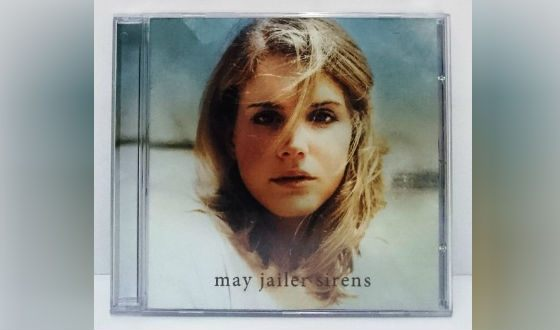

Первые шаги к славе
Вернувшись в Нью-Йорк после выпуска, Лиззи стала студенткой факультета метафизики университета Фордхам. Свободное время она тратила на волонтерство: помогала бездомным, алко- и наркозависимым людям, ездила в индейские резервации, где строила и ремонтировала дома. Параллельно она выступала в ночных клубах: Laila Lounge, Galapagos, The Living Room.
Сначала ее творческим псевдонимом было имя May Jailer; под ним в 2005 году она записала альбом «Young Like Me» и акустический альбом «Sirens». Вдохновение начинающая певица черпала в музыке шестидесятых годов. Песни тех лет не отличались мрачным звучанием, а напротив, были легкими и воздушными, в лучших традициях фолк-музыки.

В 20 лет Элизабет стала жить отдельно от родителей, какое-то время даже жила в трейлере. Она начала рассылать кассету с демо-песнями продюсерам, и осенью 2008-го девушка подписала контракт с «5 Point Records» – ей заинтересовался продюсер Дэвид Кейн. Вскоре вышел её первый мини-альбом Kill Kill, состоящий из трех песен. На тот момент девушка именовала себя Лиззи Грант. В прессу попала информация, что именно отец Элизабет оказал ей материальную поддержку на этапе раскрутки. Однако представители музыкального лейбла опровергли эти сведения. С этого времени Элизабет стала Ланой Дэль Рэй (правда, сначала третье слово в псевдониме писалось как Ray, позже трансформировавшись в Rey).
Расцвет карьеры
В январе 2010 года вышел альбом «Lana Del Ray a.k.a. Lizzy Grant». Релиз прошел без особого внимания слушателей, поэтому певица решила расторгнуть контракт и попытаться раскрутиться самостоятельно. В 2011 году она выпустила самодельный клип в манере видео-коллажа на записанную при помощи композитора Джастина Паркера песню «Video games», в котором рассказала о рутинных и несчастливых отношениях с бойфрендом.
Видео получило сотни тысяч просмотров, а ведущая передачи «Live Lounge» на радио поставила композицию в эфире, после чего на Элизабет обратили внимание представители лейбла Interscope.
В конце 2011-го года певицей был презентован сингл «Born to Die», предвосхитивший выход одноименного альбома, который занял пятую позицию среди самых продаваемых альбомов года (а сама певица попала в топ-3 самых популярных певиц Америки). Критики называли его связующим звеном между современной хип-хоп культурой и классической поп-музыкой, снабженным джазовыми элементами.
Выход альбома сопровождался скандалом в шоу Saturday Night Live, когда Лана не справилась с исполнением первого куплета в песне «Blue Jeans», на что аудитория среагировала очень агрессивно. Девушка затравили, однако шумиха только подогрела интерес к выходу нового альбома.
В 2012-ом исполнительница начала работу над следующим альбомом и сделала кавер-версию популярной в пятидесятых годах песни «Blue Velvet». Клип, снятый в антураже сериала Дэвида Линча «Твин Пикс», произвел фурор среди пользователей YouTube и зрителей музыкальных каналов.
В 2013-ом году у Ланы Дель Рей начался первый мировой гастрольный тур. О популярности певицы можно судить по тому факту, что билеты на её концерт в Париже были полностью распроданы за полторы минуты.
В том же году ее песня «Young and Beautiful» становится частью саундтрека к «Великому Гэтсби» с Леонардо Ди Каприо. Композиция становится второй после «Born to Die» визитной карточкой. В этот период выходит короткометражный фильм ее авторства «Tropico», который стал настоящей усладой для глаз ценителя качественного видеоряда.
В 2014 году выходит ее новый альбом «Ultraviolence», который Дель Рей называет «концептуальным», а жанр относит к «психоделик-року». Название – отсылка к «Заводному апельсину» Энтони Берджесса, а на написание песен девушку вдохновило путешествие по Западному побережью Америки. Альбом имел коммерческий успех, а в 12 странах стартовал с первой позиции в национальных чартах. Зловеще-сказочная композиция «Once Upon a Dream» вошла в саундтрек фильма «Малефисента» с Анджелиной Джоли.
Год спустя певица порадовала слушателей новым альбомом «Honeymoon». Пластинка напоминала о первых альбомах Ланы Дель Рэй: вновь нуарная атмосфера 60-х, блюзовые мотивы и гипнотический женский голос. «High by the Beach» и «Music to Watch Boys To» были выпущены синглами.
В 2017 году вышел альбом «Lust For Life», в записи которого принимали участия также рэпер The Weeknd, ASAP Rocky, сын Джона Леннона Шон и другие знаменитости. В 2018 году альбом был номинирован на «Грэмми», но не победил. В 2018 году певица отправилась в мировой тур в поддержку альбома.